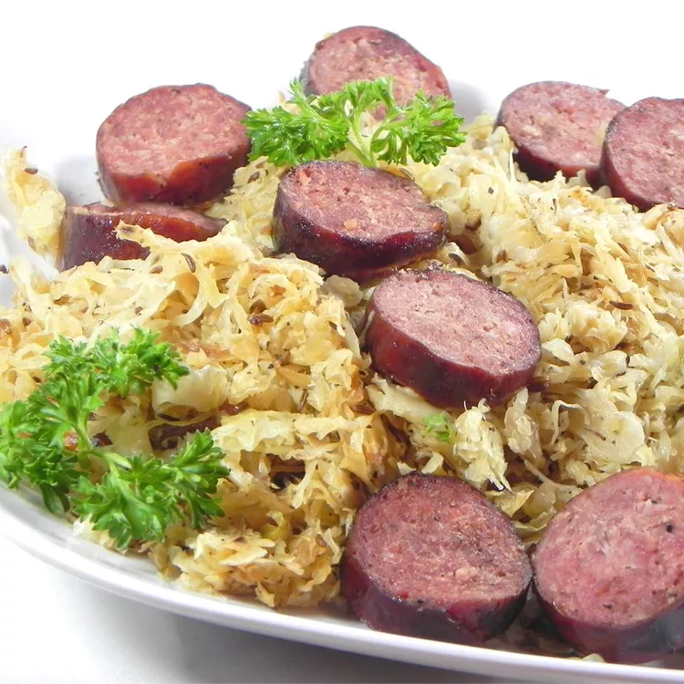

Sausage and Kraut

Quick sausage and sauerkraut dish
Ingredients:
- 1 package(12 oz) pork sausage, halved and cut into 4-inch pieces
- 2 tbsp butter
- 1 jar(32 oz) sauerkraut, drained
- 1 tbsp dried minced onion
- 2 tbspn brown sugar
- ground black pepper
Directions:
- Preheat an outdoor grill for medium-high heat and lightly oil the grate.
- Grill sausages on the preheated grill until browned, about 3 minutes on each side.
Cut cooked sausage into 1/2-inch slices.
- While the sausage is cooking, melt butter spread in a large skillet over medium-high heat.
Stir in sauerkraut, onion, brown sugar, and pepper.
Cook and stir until sauerkraut begins to brown, about 10 minutes.
Stir in sausage slices.
Serve hot.